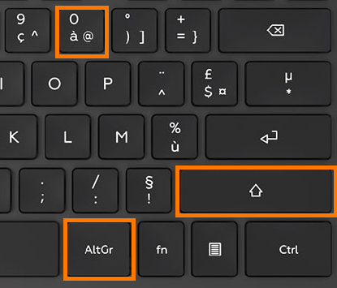

Les touches Maj. et Alt Gr
Objectif : Apprendre à utiliser les touches Maj. et Alt Gr pour accéder aux symboles du clavier
💡 Conseil important
Chaque touche peut afficher jusqu'à 3 caractères différents selon la combinaison utilisée. Repérez bien les symboles en haut et en bas à droite de chaque touche avant de vous exercer.
Comment accéder aux symboles
La touche Maj.
Maintenez la touche Maj. enfoncée pendant qu'on appuie sur une autre touche pour obtenir le signe situé en haut de cette touche. Exemple : Maj. + 0 = à
Maintenez la touche Maj. enfoncée pendant qu'on appuie sur une autre touche pour obtenir le signe situé en haut de cette touche. Exemple : Maj. + 0 = à
La touche Alt Gr
Maintenez la touche Alt Gr enfoncée pendant qu'on appuie sur une autre touche pour obtenir le signe situé en bas à droite de cette touche.
Exemple : Alt Gr + 0 = @
Maintenez la touche Alt Gr enfoncée pendant qu'on appuie sur une autre touche pour obtenir le signe situé en bas à droite de cette touche.
Exemple : Alt Gr + 0 = @
Aide visuelle

Exercez-vous !
Cliquez dans la zone ci-dessous et tapez les caractères suivants :
1
@
3
+
€
%
{
/
5
.
@